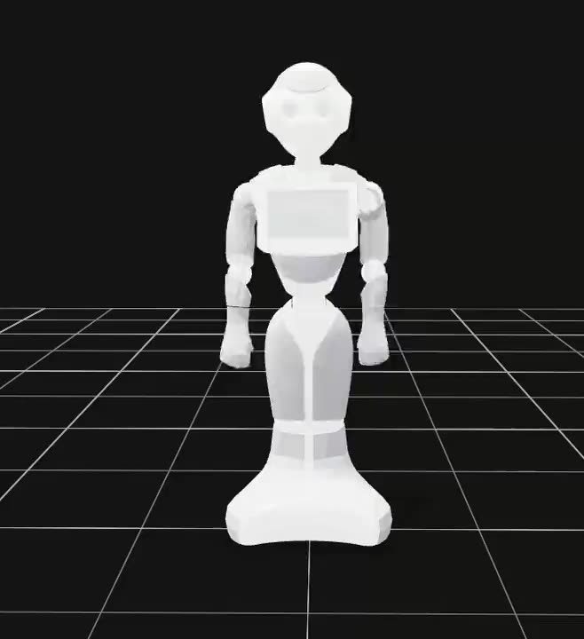
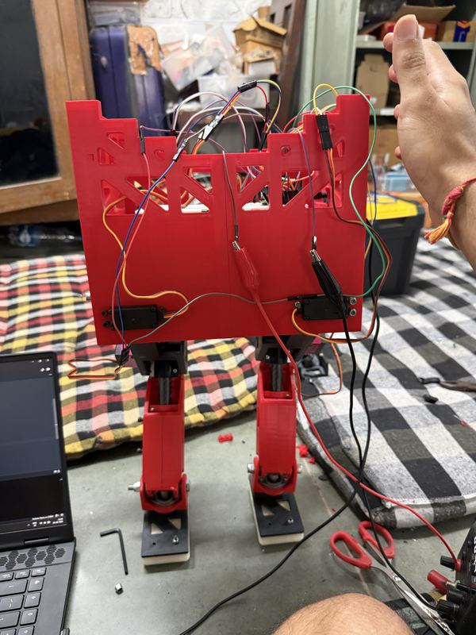
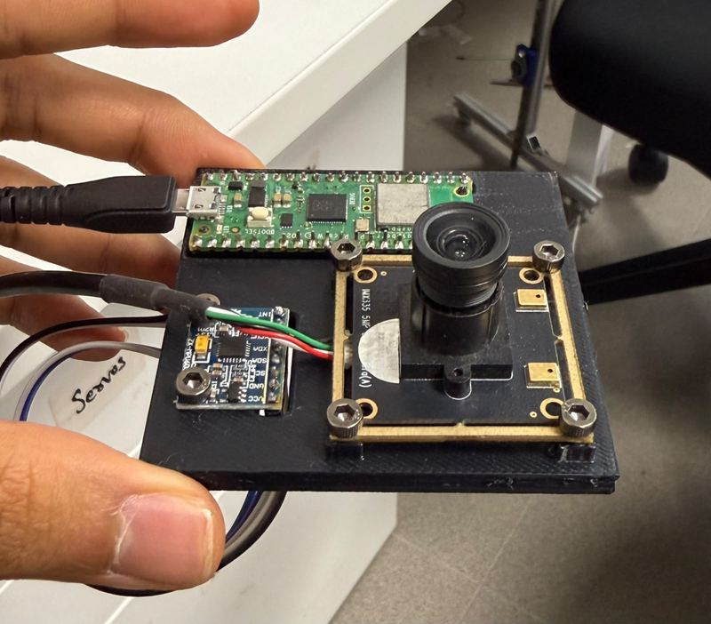
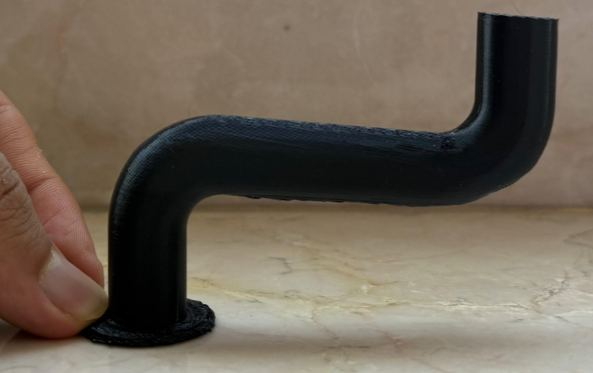

Education
B.Tech, Mechanical Engineering
2024 to 2028Indian Institute of Technology Bombay
- CPI 8.58
- Minor in Artificial Intelligence and Data Science
- Minor in Systems and Control
HSC
2024Pace Junior Science College, Dadar
- 86.67%
ICSE
2022Campion School
- 96.20%
Experience
Subsystem Lead, Robotic Arm and LDT
Apr 2026 to presentMars Rover Team, IIT Bombay
- Leading 15 undergraduates on a multi functional robotic arm
- Built around belt drives, BLDC motors and a two stage planetary and cycloidal gearbox
- Mentoring the quadruped and hexapod builds from concept to working prototype
Research Intern
Jun 2026 to Jul 2026GV Lab, University of Tokyo
- Built a human to robot motion retargeting pipeline under Prof. Gentiane Venture
- Deployed it on a Pepper humanoid and a UR5 arm
Senior Design Engineer, Robotic Arm Subsystem
Apr 2025 to Apr 2026Mars Rover Team, IIT Bombay
- Designed the 5-DOF arm and its full drivetrain
- Custom two stage 81:1 cycloidal drive, and a 2-DOF differential wrist 35% lighter than the version it replaced
- Worm drive in the explicit steering so joints hold position with no power applied
Convener
May 2025 to Mar 2026Krittika, Astronomy Club, IIT Bombay
- Designed a custom 2-DOF stand for the EdgeHD11 telescope in the institute observatory
- Led a learners' space session on coordinate systems and time
- Ran outreach reaching over 10,000 people on National Space Day
Skills
- Design and simulation
- SolidWorks, ANSYS, ANSYS Fluent, COMSOL, Fusion 360, MSC Adams, MATLAB, Simulink, Simscape Multibody
- Robotics
- ROS2, Isaac Lab, Holosoma, Gazebo, MuJoCo
- Programming
- C, C++, Python, SQL, LaTeX
Projects
Six things I have designed, built or written. Open any one for photos, video and the details.

Human to Robot Motion Retargeting
Turning a phone video of a person handling an object into motion a robot can reproduce.
View project
Mars Rover Robotic Arm
A 5-DOF manipulator for a competition rover, built around a custom cycloidal drive.
View project
Robo Sapien, a Bipedal Robot
A 6-DOF walking robot with a reinforcement learning policy trained in Isaac Lab.
View project
State Estimation on Lie Groups
Attitude estimation on Lie groups, extended into visual inertial odometry on a rig I built.
View project
Support Free 3D Printing
Printing 90 degree overhangs with no support material, on an unmodified 3-axis printer.
View project
Stress Concentration by Photoelasticity
Measuring stress concentration factors optically, with fringe patterns instead of a solver.
View projectAlso worked on
Holo-Battalion
Aug 2025 to presente-Yantra Robotics Competition
- A swarm of three robots, each with an articulated arm and omnidirectional holonomic drive
- ROS2 server and client framework with ArUco marker vision and homography for pose estimation
- Centralized task allocation by Euclidean proximity, minimising total travel
Wildlife Detection from Camera Traps
Aug 2025 to Oct 2025DS203, IIT Bombay
- An XGBoost pipeline 60% more accurate than a logistic regression baseline
- HOG, LBP, GLCM and ORB descriptors pruned with SelectKBest to the 150 most predictive features
Drone Remote Controller
Jul 2024 to Nov 2024Makerspace MS101, IIT Bombay
- A joystick remote giving a drone prototype hover capability
- Custom ESP32 PCB routed in EasyEDA with ARM switches and an OLED display